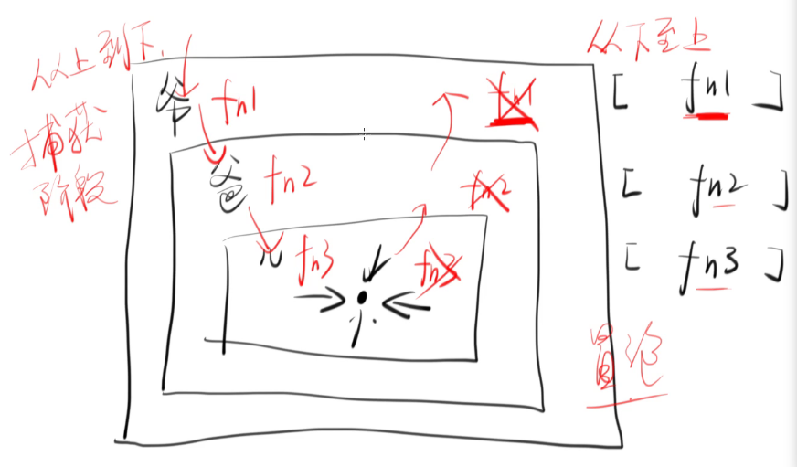
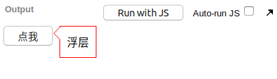
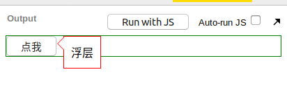
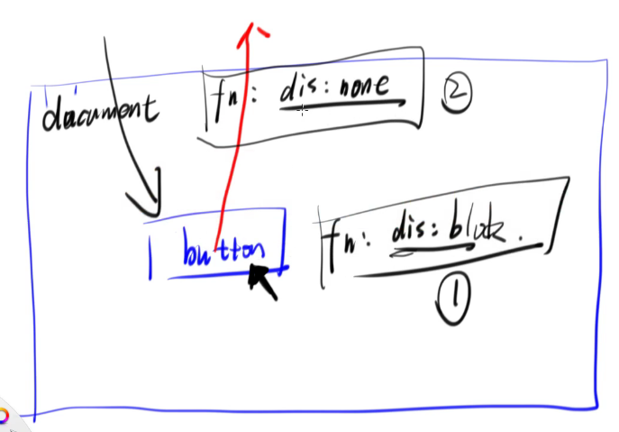
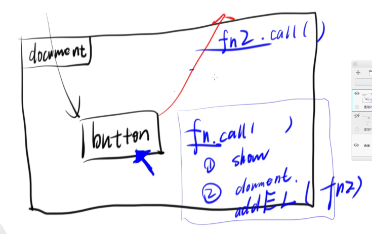
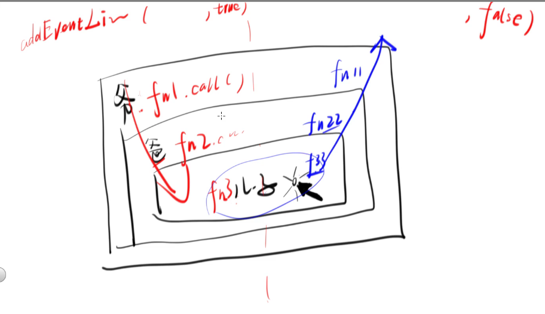

DOM 的版本
DOM1链接
DOM Level 1 主要有两个版本,但主要学习的是 DOM Level 2 的事件标准, 因为 DOM Level 1 太简单了
所以事件标准用的最广泛的是 DOM Level 2
例子<button id=X onclick="print">A</button> // 错误使用
<button id=Y onclick="print()">B</button> // 正确使用
<button id=Z onclick="print.call()">C</button> // 正确使用
<script>
function print() {
console.log('hi');
}
X.onclick = print // 正确使用 // 类型为函数对象
Y.onclick = print() // 错误使用 // undefined
Z.onclick = print.call() // 错误使用 //undefined
</script>
html 中 onclick="要执行的代码"
一旦用户点击,浏览器就 eval("要执行的代码")
而 js 中,一旦用户点击,那么浏览器就点击X.onclick.call(X, {})
还有一个例子<button id=xxx>xxx</button>
// 属性,唯一
xxx.onclick = function() {
console.log(2);
}
xxx.onclick = function() {
console.log(3);
}
// 队列,不唯一
// xxx 拥有一个队列 eventListeners
function f1() {
console.log(1);
}
function f2() {
console.log(2);
}
xxx.addEventListener('click', f1)
xxx.addEventListener('click', f2)
再再再一个例子<div id='grand1'>
<div id='parent1'>
<div id='child1'>
</div>
</div>
</div>
所以
- 当点击 ‘child1’ 时,有没有点击到 ‘parent1’ 和 ‘grand1’ (是都点击到)
- 代码 1
// 当点击 'child1' 时,三个函数是否调用 (是的都调用到了) |
- 代码 2
// 那么 fn1 fn2 fn3 的执行顺序是 |
- 代码 3
// 假如再多一个事件呢 |
- 代码 4
// 如果是最后一个节点,既有"冒泡" 也有 "捕获"的情况下,那么是先执行哪个呢 |
所以事件模型如下图所示

写个例子
bootstrap 上的 popover 例子 bootstrap popover
自己写来验证
html 代码
<html>
<head>
<meta charset="utf-8">
<title>JS Bin</title>
</head>
<body>
<div class="wrapper">
<button id="clickMe">点我</button>
<div id="popover" class="popover">
浮层
</div>
</div> </body>
</html>
css.wrapper {
position: relative;
display: inline-block;
}
.popover {
border: 1px solid red;
position: absolute;
left: 100%; top: 0;
white-space: nowrap;
padding: 10px;
margin-left: 10px;
background: white;
}
.popover::before {
content: '';
position: absolute;
right: 100%; top:0;
border: 10px solid transparent;
border-right-color: red;
}
.popover::after {
content: '';
position: absolute;
right: 100%; top:0;
border: 10px solid transparent;
border-right-color: white;
margin-right: -1px;
}
效果图如下所示

想要做到点击 ‘点我’ 按钮屏蔽 ‘浮层’ 元素,以下有一个简单的方法,即通过 监听 body 的方式
javascriptclickMe.addEventListener('click', function() {
popover.style.display = 'block';
});
// 监听 body
document.body.addEventListener('click', function() {
console.log('click body');
// 执行代码逻辑...
});
但是这种方式存在缺陷,因为 body 的宽和高被限定了,在 body 中加入 css body{ border: 1px solid green},如下图所示

就造成了点击不是 body 的别处就不会响应相应逻辑
所以可以通过 改变 body 宽高,监听文档 document 或者 监听 html document.documentElement 的方式来进行,如下的 js 代码
clickMe.addEventListener('click', function() { |
然而以上代码还是有 bug,用户点击按钮时页面没有反应,这是由于 DOM 事件响应的顺序造成的,出现 bug 的原因如下图所示

原因其实很简单, document 和 button 的两个函数都是在冒泡阶段执行的
解决方法
阻止冒泡,思路: 切断 button 向上冒泡那一层,使用 stopPropagation 函数, js 代码如下
clickMe.addEventListener('click', function(e) { |
但是点击 ‘浮层’,浮层就会消失,原因是在 wrapper 那里没有阻止冒泡, 加上即可
clickMe.addEventListener('click', function(e) { |
更好的解决方法
document 只用监听一次,如下代码
使用 jQuery 来做$(clickMe).on('click', function() {
$(popover).show();
$(document).one('click', function(){
$(popover).hide();
});
})
$(wrapper).on('click', function(e){
e.stopPropagation();
})
好处是不用每次点击 document 就增加一个函数,比较节省内存, one 只执行一次,执行完就销毁
或者使用异步代码
$(clickMe).on('click', function(){ |
这里异步代码执行的逻辑是,先 show ,然后执行 setTimeout 并且将 click 事件绑定在函数 function 上,然后等待 button 的 click 事件冒泡结束后,下次若有点击出现在 document 上时,便执行已经绑定好的 function 里的 hide 函数
最后的 bug
假如最后的代码是这样
$(clickMe).on('click', function() { |
即去掉了 wrapper 的点击事件的添加,那么呈现出来的效果就还是点击按钮没反应,原因如下图所示

由于代码并非异步执行,所以在冒泡阶段,代码首先执行了 show,而后 document 立即执行了添加事件监听,将 document 已经绑定好的函数执行了,也就是执行到了最后的 hide
DOM 一些注意事项
- 尽量不用全局变量(window),要用局部变量,不然变量名跟全局变量一样的话就会互相覆盖,局部变量就用函数包起来,让这个变量有个局部作用域
立即执行函数,声明一个函数,立即执行这个函数 (避免使用全局变量)
代码如下
function() {
var parent = document.querySelecor('#self');
console.log(parent);
}.call()
// 或者
function() {
var parent = document.querySelecor('#self');
console.log(parent);
}()
以上的代码,在刷新页面时会报错,解决方法如下
加括号
(function() {
var parent = document.querySelecor('#self');
console.log(parent);
}.call())
// 或者
(function() {
var parent = document.querySelecor('#self');
console.log(parent);
}).call()加正/负号, ~,!号
+function() {
var parent = document.querySelecor('#self');
console.log(parent);
}.call()
-function() {
var parent = document.querySelecor('#self');
console.log(parent);
}.call()
~function() {
var parent = document.querySelecor('#self');
console.log(parent);
}.call()
!function() {
var parent = document.querySelecor('#self');
console.log(parent);
}.call()用代码块
{
// 这里不能用 var ,用 var 就相当于声明了全局变量,因为 var 声明的变量会提升
let parent = document.querySelecor('#self');
console.log(parent);
// let 的作用域始终在包含它的花括号里
}
DOM 事件小总结
DOM 事件响应的模型

如上图所示,这里有三个 div,其嵌套关系为 ‘爷爷 > 爸爸 > 儿子’,对于添加事件监听来说,如果给 addEventListener 后传参为 true,则将其事件添加进 捕获阶段;如果给 addEventListener后传参为 false 或者不传参,则将其事件添加进 冒泡阶段
若三个 div 节点监听的事件均在捕获阶段,那么对应函数执行的顺序就是 fn1 > fn2 > fn3;
若三个 div 节点监听的事件均在冒泡阶段,那么对应函数执行的顺序就是 fn33 > fn22 > fn11;
对于 ‘儿子’ 来说,若同时存在 fn3 和 fn33,那么优先响应先添加进的事件